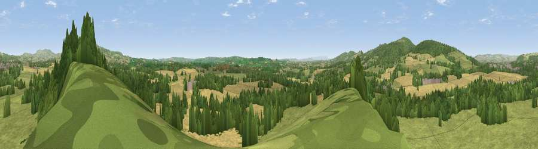

Viewpoint near Ashford Carbonell
#13892 in England · top 37% of its area beats it · near Ashford CarbonellWhere it is
The exact computed spot (SO 52275 72325). Click the marker for map links.
The view, rendered

A 360° render of this exact spot computed from the terrain model, tree cover and land cover — summer colours, afternoon light, calibrated against photographs of famous viewpoints. Real trees, hedges and buildings will differ in detail.
The panorama
Grey silhouette: terrain skyline in each direction (720 bearings, Earth curvature and refraction included). Dashed green: skyline with trees (+15 m) and buildings (+8 m) as obstacles. Blue strip: how far the ground is visible on each bearing.
Where the view opens
Wedge length = distance to the farthest visible ground on that bearing (vegetation-aware). Rings at 10, 25 and 50 km.
What fills the view
47% grassland · 29% cropland · 22% woodland · 2% built-up
Angular shares of the visible panorama (visual magnitude), not map area. Landscape diversity 0.48 (0–1 Shannon).
Key numbers
More beautiful places nearby
The staircase of upgrades: each row has a higher view potential than everything closer. Driving times are estimates from straight-line distance, calibrated against real road routing — check an actual route before setting out.
| Place | Direction | Drive | Score |
|---|---|---|---|
| Caynham Fort Hill | ENE · 3 km | ~6 min | 63.3 |
| Viewpoint near Richard's Castle | WSW · 5 km | ~11 min | 71.0 |
| Bringewood Hill | WNW · 5 km | ~12 min | 82.2 |
| Viewpoint near Cleehill | ENE · 8 km | ~16 min | 82.3 |
| Gatley Hill | WSW · 8 km | ~16 min | 82.6 |
| Titterstone Clee | NE · 9 km | ~18 min | 83.8 |
| The Lawley | N · 25 km | ~41 min | 85.8 |
| North Hill | SE · 36 km | ~54 min | 86.8 |
52.34691, -2.70202 · source: screening · position refined by local search. Computed location — check access rights before visiting.